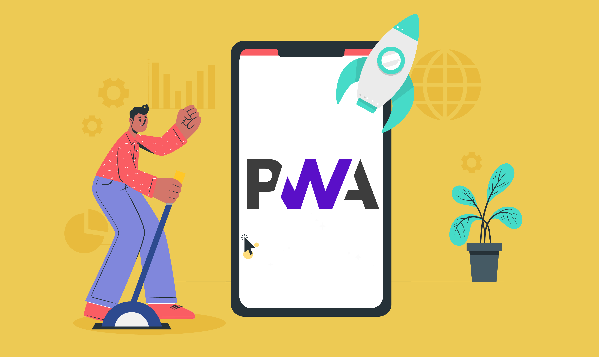

APLICACIONES WEB PROGRESIVAS
Las aplicaciones web progresivas o PWA, no son una tecnología nueva pero últimamente están todavía más de moda. Esto después de que Microsoft anunciara que Windows las soportaría de forma nativa. También están disponibles en Google Chrome, Firefox y Safari.

Las Apps Progresivas ofrecen experiencias de usuario rápidas, altamente optimizadas y seguras. Así, generan un nivel de engagement que reduce las distancias entre las Webs y las Apps Nativas.
¿Qué son las aplicaciones web progresivas?
Las aplicaciones web progresivas (PWA) son una nueva generación de aplicaciones que aprovechan las principales tecnologías web (HTML, CSS y JavaScript) para crear interfaces para los servicios de Internet. A diferencia de las aplicaciones móviles o las de escritorio, estas PWA pueden ejecutarse en cualquier navegador compatible con los estándares, además de otras ventajas como las notificaciones push, el rendimiento o el incremento de su funcionalidad según las capacidades del dispositivo y de ahí su denominación Progressive.
Las aplicaciones web han estado luchando por su implantación desde que los navegadores adquirieron mayores capacidades que mostrar texto e imágenes. Inicialmente, estas aplicaciones web eran torpes y pesadas y simplemente no podían competir con las de escritorio, las clásicas que tenemos que instalar en nuestros equipos. La llegada de miles de apps móviles ante la explosión de venta de smartphones ofreció otro mundo de posibilidades. Las aplicaciones web progresivas se sitúan entre ambas, se comportan como webs nativas, pero usan tecnologías web.

CARACTERÍSTICAS DE LAS APLICACIONES WEB PROGRESIVAS
Este tipo de aplicaciones intentan llevar la usabilidad de una aplicación móvil nativa al conjunto de características de un navegador moderno, aprovechando al máximo los avances en ambas áreas de desarrollo, ofreciendo ventajas evidentes al permitir a los usuarios ejecutarlas directamente desde el escritorio sin pasos adicionales. También pueden trabajar fuera de línea, aunque no hace falta decir que la mayoría de servicios de Internet necesitan conexión.
Los conceptos de una PWA vienen definidos por:
- Universalidad: una PWA debe funcionar sin problemas para cada usuario, independientemente de su navegador web.
- Responsive: debe funcionar con cualquier dispositivo, ordenador portátil, tablet o teléfono inteligente.
- Diseño: debe imitar las aplicaciones móviles nativas, es decir, menús simplificados y fáciles de encontrar, con una interactividad simple para funciones avanzadas.
- Seguridad: PWA deben usar siempre HTTPS para mantener seguros los datos del usuario.
- Actualizaciones: los PWA se mantienen actualizados y ofrecen las últimas versiones de un servicio o sitio.
- Descubrimiento: los usuarios deben poder encontrar fácilmente las PWA y ser identificables como una aplicación, en lugar de un sitio web.
- Instalación: desde cualquier navegador sin pasos adicionales y sin necesidad de descargas desde tiendas de aplicaciones.
- Compartir: PWA solo requiere una única URL para compartir, sin ninguna instalación.
¿Como funcionan?
La clave de las aplicaciones web progresivas son los llamados service workers. Es un script (un proxy controlable que se ejecuta entre el navegador y el servidor) «separado de una página web, abriendo la puerta a funciones que no necesitan una página o la interacción del usuario». Como tal, estos service workers forman la base del estándar PWA, utilizando caché web para obtener resultados casi instantáneos. Los service workers solo duran mientras se requiera su acción. En una PWA, cuando haces clic en algo o usas una función, uno de ellos entra en acción, procesa el evento decidiendo si la caché sin conexión puede completar la solicitud. La idea es que haya múltiples cachés fuera de línea para que PWA la selecciones, lo que brinda una gama mucho más amplia de funcionalidades sin conexión. Además, la caché no es solo para aumentos de velocidad fuera de línea. Por ejemplo, si ejecutas una PWA, pero tu conexión es extremadamente irregular el service workers puede servir una caché anterior, en pleno funcionamiento, sin interrumpir la experiencia. De hecho, hay sitios web, tan bien implementados, que cargan de manera rapidísima, incluso más rápido que una app nativa.
Soporte de navegadores
Hay dos requisitos para usar una aplicación web progresiva: un navegador compatible y un servicio habilitado. Webs como IsServicesWorrkedready permiten verificar la compatibilidad de los navegadores con PWA y otros como CanIUse, se especializan en enumerar la implementación de esta tecnología en cada por cada versión y navegador. Por ejemplo, si buscas por service workers en la barra de búsqueda, encontrarás una tabla que muestra el número de versión con el que cada navegador los implementó. Desglosando el estado actual de soporte:
- Navegador de escritorio (Soporte completo): Chrome, Firefox, Opera, Edge, Safari
- Navegador de escritorio (soporte parcial / versión desactualizada): QQ, Baidu
- Navegador móvil (soporte completo): Chrome, Firefox, Safari, UC Browser, Samsung internet, Mint Browser, Wechat
- Navegador móvil (soporte parcial / versión desactualizada): QQ, Android Browser, Opera Mobile
Confirmamos que los principales navegadores web son compatibles con PWA. Edge Chromium y Safari son las adiciones más recientes a la lista completa de soporte. Por el contrario, otros alternativos como QQ y Baidu ahora usan versiones obsoletas y, como tales, han caído al segundo nivel.

Las aplicaciones web han estado luchando por su implantación desde que los navegadores adquirieron mayores capacidades que mostrar texto e imágenes. Inicialmente, estas aplicaciones web eran torpes y pesadas y simplemente no podían competir con las de escritorio, las clásicas que tenemos que instalar en nuestros equipos. La llegada de miles de apps móviles ante la explosión de venta de smartphones ofreció otro mundo de posibilidades. Las aplicaciones web progresivas se sitúan entre ambas, se comportan como webs nativas, pero usan tecnologías web.
Cecilia Monserrat Escobar Nafate cecilia.escobar63@unach.mx